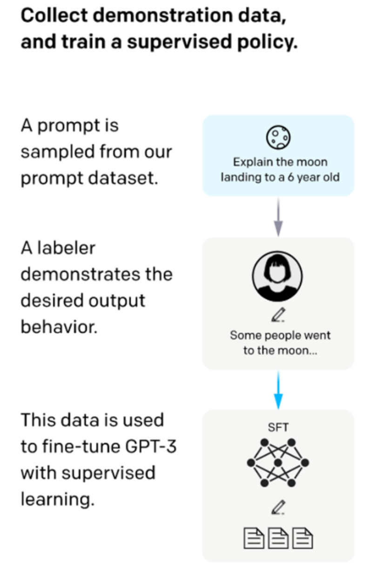

SFT监督微调
正在读取本章记录下次复习：—
请通过“启动学习站.cmd”进入，才能写入数据库。
随着大规模预训练模型（如 GPT、LLaMA）的兴起，单靠无监督预训练难以满足具体任务需求。 监督微调（Supervised Fine-Tuning，简称 SFT）通过在带标签的数据上有针对性训练，使模型更好 地适应特定应用场景。
一、SFT 在大模型训练中的角色
预训练阶段侧重于学习通用语言知识和模式，训练数据无须人工标注，规模巨大但缺乏针对性。SFT 则是在此基础上利用人工标注或高质量合成数据，针对具体任务进行有监督训练，提升模型的任务适 配能力和输出质量。
二、SFT 的核心流程

1. 准备标注数据 收集并清洗与目标任务相关的高质量输入-输出对，例如问答对、对话数据或文本分类样本。
-
加载预训练模型 以预训练好的大模型为基础，参数初始值固定。
-
有监督训练 使用标注数据对模型进行训练，优化模型在任务上的表现，通常采用交叉熵等损失函数。
4. 验证与调优
通过验证集监控训练效果，调整超参数如学习率、训练步数，防止过拟合。
三、SFT 的优势与应用场景
- 提升特定任务性能
显著优化问答、对话生成、文本分类等多种下游任务表现。
- 结合其他技术灵活使用
可与 RLHF、LoRA、提示微调等技术组合，增强定制能力和训练效率。
- 适应多样化应用需求
从客服机器人到专业领域辅助，SFT 帮助模型更精准满足需求。
四、SFT 需要注意的问题
SFT虽然重要并且有效，但是同时我们也不能放养式的SFT，还是要注意下面的几个问题：
-
数据质量关键 标注数据的准确性和多样性直接影响模型效果。
-
计算资源消耗较大
模型的 SFT 训练仍需较强算力，需合理规划训练计划。
- 过拟合风险
训练时要避免模型过度拟合标注数据，影响泛化能力。